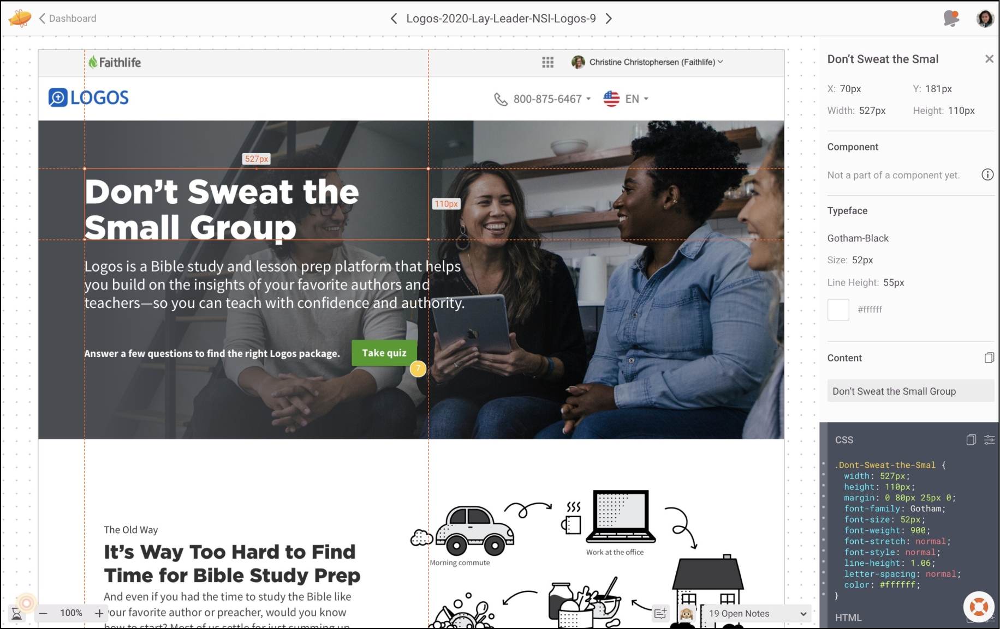
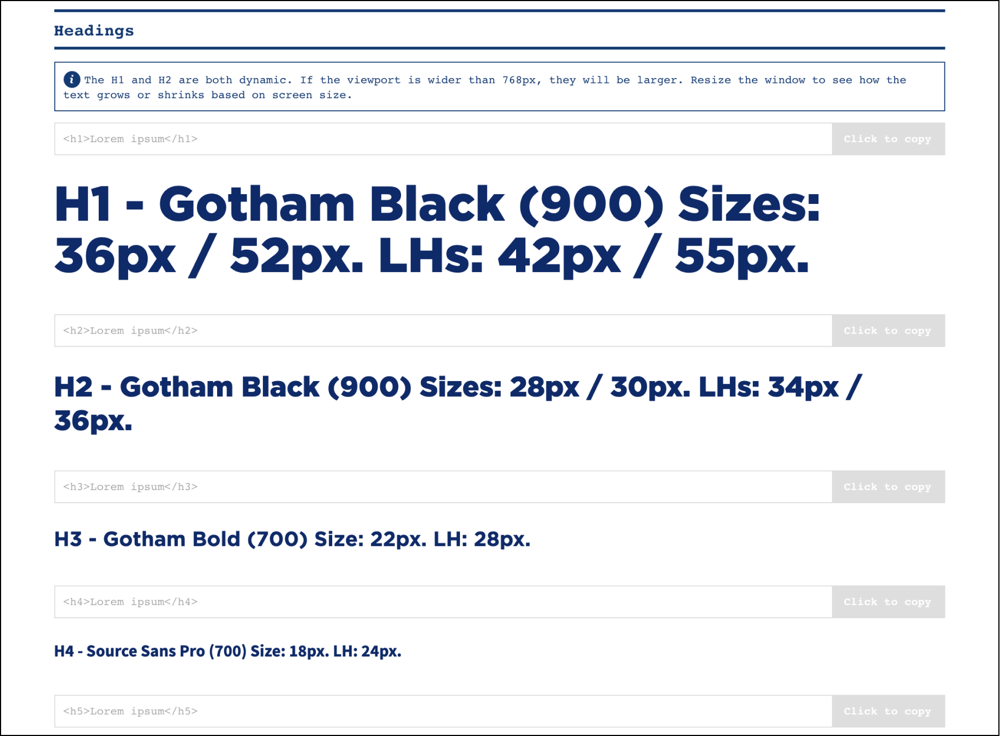
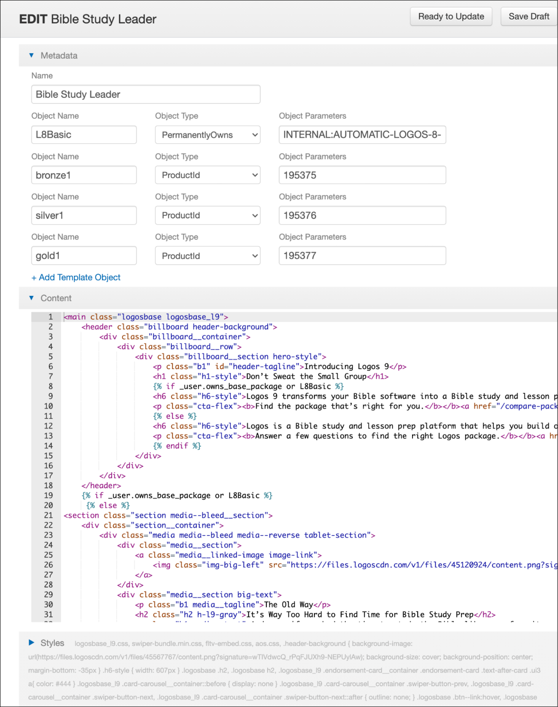
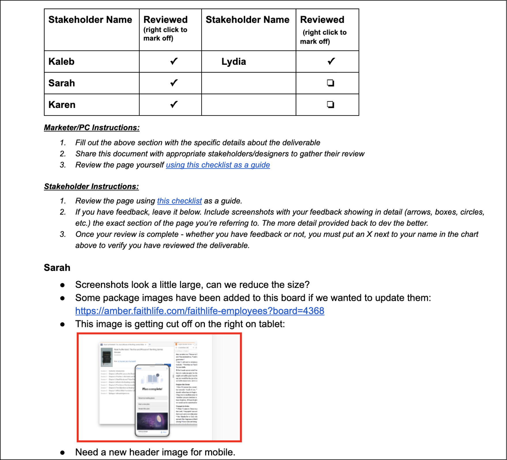
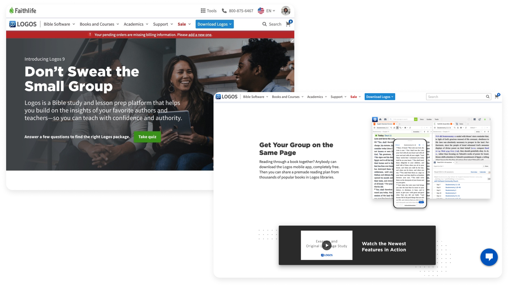
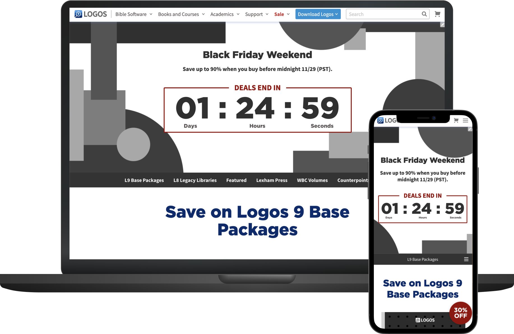

My time as a front-end UI developer has helped me immensely as a designer. The experience of being a self-taught programmer has allowed me to empathize with not only the end-user, but the developer.
As a designer with development experience, I have a proficient understanding of responsive design, feasibility, the impact of design systems on developers & designers, and how to communicate between both parties.
About Faithlife (Logos): Faithlife is a technology company that makes products from Bible software, to Christian books, to presentation software, and more. Logos is a subsidiary of Faithlife — they operate an eCommerce book store where I build the pages.
Workflow snapshot:
Collaborate with: product manager, design team, copywriter, marketing team, stakeholders
Skills + Programs: HTML / CSS / Javascript / Github / Shopify Liquid Tags / Bootstrap / Documentation / Style Guide/ User States / Zeplin / Jira
All projects are given a brief, copy deck, list of product SKUs, and desktop/tablet/mobile prototypes.
Most projects consist of coding various types of landing pages; typically a mix of informational, promotional, or e-commerce.
There are always special promotions running. I use liquid tags and product SKUs to load the page with shop content.
Examples of promo pages include: Black Friday, Christmas sale, publication sales, etc.
Logos curates experiences for customers based on different user states or products purchased in the past. My goal is to code one page that displays custom content for users.
For example, different discounts or copywriting can be displayed for returning customers vs new customers. Or I could disable (gray out) products people have already purchased in the past.
1. Brief
I receive an assignment on Jira that outlines my project. The brief defines the project type and deadline, along with the necessary information (prototypes, copy deck, design assets, product skus, urls).
2. Coding
I begin examining the desktop/tablet/mobile prototypes on Zeplin. This helps define the scope of the project and visualize the final product. If I have questions, I reach out to the team who handles the corresponding work.
Then I go to the style guide + component library and search for UI styling information and re-usable code relevant to the prototype.
I code mostly on the proprietary IDE, which doesn’t require Git because it has its own version control. Depending on the type of project, I build on the Visual Studio Code editor and use Github to push my commits.
Once I am done coding, I make sure everything is consistent with the brief and prototype. Some examples include double-checking: url redirects, margins/padding, font sizes, responsive web design, or shadows.
3. Feedback
Once my website is done, I’m ready to show it to the stakeholders. I share the url to the page and mention any important info about the site. The stakeholders provide feedback on a google doc and the product manager notifies me when feedback is in.
4. Iterate
I go through each feedback on the google doc. The document is a mix of website feedback and last minute design or copywriting changes.
I apply all the changes and let my team know. The product manager takes a look at it and either gives me a couple more revisions or a green light to launch the website.
5. Launch
Every website has a specific launch date and time. I automate the process by using liquid tags to let the system know when to publicize the website.
On the launch date, I get to see my work go live!
Landing page
Promotional
User states